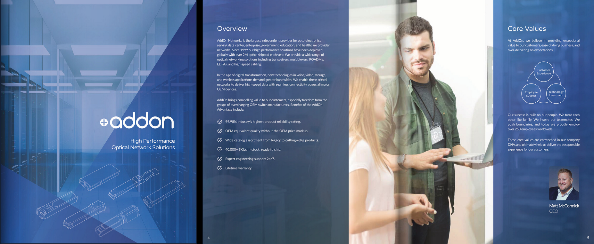

Graphic & Web Design
I currently work at AddOn Networks as a Junior Graphic Design. I started in the company in 2020 as contractor designer assistant and been promoted to full-time designer in early 2022.
My duties include assisting the lead designer with design requests from other employees of the company and creating assets for internal use, as well as creating all materials for promoting company's products.
From beginning of my employment, with timeline of about 6 months, I have redesigned a 40-page brochure for the AddOn brand from previous material under many revisions from multiple feedback sources.
This brochure has been printed for company usage.
View brochure online here.

These are my graphic design works during my employment at UCIrvine while a student. The brochure designs are shown as 3D-generated demos I made during the production.
I have also designed the website logo for the UCInspire program.


Design Notes: For this brochure, I had decided to evolve the main cover page from the program logo that I created earlier. The color scheme follows the UCIrvine brand guidelines, but the placement of colors is intended to portray a sort of playful feeling to go along with the program’s summer timeframe.
3+2 Engineering Program brochure

Design Notes: For this brochure, I continued to follow the UCI brand standards for the color scheme, and decided to focus on a modern but professional looking theme for the overall look of the design as the program is a combination of bachelor’s and master’s degrees for involved students.
INT2025 Conference Website
I have created the logo, home, and page banners for the INT2025 conference website.
Everything was made using CC0 stock images.


Design Notes: For the website, I considered the main conference theme - Artificial Intelligence in 2025- and decided to go for a modern look to evoke the feeling of ‘future technology’ and decide on the cyan with magenta accent for the color scheme.
UCI-DUT Joint Program
Designed the website seen, starting from a free template on UCI Sites framework via WordPress. Using some stock photos and custom graphics to make the program site appealing with future applicants. Maintain both English and Chinese versions of the site.